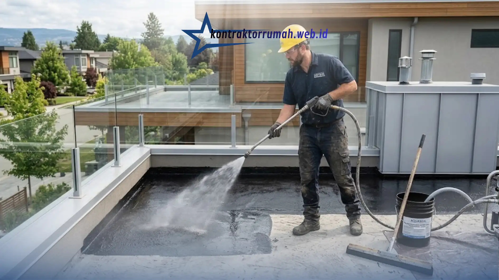

Masalah bocor dan retak pada rumah adalah dua persoalan paling umum yang dihadapi pemilik rumah di kawasan Jabodetabek, terutama pada musim hujan atau pada bangunan yang sudah berusia cukup lama. Menggunakan jasa kontraktor renovasi yang tepat menjadi langkah penting untuk mengatasi masalah ini secara tuntas, bukan sekadar menutupi gejalanya sementara.
Poin Penting
- Kebocoran rumah paling sering disebabkan waterproofing rusak, kemiringan atap/talang keliru, pipa bocor, dan retak yang dibiarkan.
- Retak dibedakan jadi retak rambut (kosmetik) dan retak struktural (akibat penurunan pondasi atau beban berlebih) — penanganannya berbeda.
- Segera hubungi kontraktor bila kebocoran berulang di titik sama, retak terus melebar, atau muncul rembesan luas dan jamur.
- Kontraktor profesional menangani secara bertahap: identifikasi sumber, pembongkaran terbatas, perbaikan & aplikasi ulang material, hingga finishing & uji coba.
- Biaya perbaikan bervariasi tergantung luas area, tingkat kerusakan, dan jenis material waterproofing yang dipilih.
Apa Penyebab Umum Rumah Mengalami Bocor?
Kebocoran pada rumah umumnya disebabkan oleh beberapa faktor berikut yang saling berkaitan satu sama lain.
Kerusakan pada membran waterproofing menjadi penyebab paling sering ditemukan pada atap dak beton, talang air, dan area kamar mandi, terutama jika lapisan waterproofing sudah melewati usia pakainya atau diaplikasikan dengan kualitas yang kurang baik sejak awal.
Kemiringan atap atau talang yang tidak tepat dapat menyebabkan air hujan menggenang di satu titik alih-alih mengalir lancar ke saluran pembuangan, sehingga lama-kelamaan air meresap masuk ke dalam struktur bangunan.
Sambungan pipa yang bocor di dalam dinding atau di bawah lantai juga kerap menjadi sumber kebocoran yang tidak terlihat langsung, namun menimbulkan rembesan pada dinding atau plafon di area yang cukup jauh dari titik kebocoran sebenarnya.
Retak pada dinding atau dak beton yang tidak segera ditangani juga dapat menjadi jalur masuknya air hujan ke dalam struktur bangunan, sehingga masalah retak dan bocor seringkali saling berkaitan dan perlu ditangani secara bersamaan.
Apa Penyebab Umum Dinding atau Lantai Rumah Retak?
Keretakan pada bangunan dapat dikategorikan menjadi retak ringan yang bersifat kosmetik dan retak struktural yang perlu penanganan lebih serius.
Retak rambut biasanya disebabkan oleh proses pengeringan alami material acian atau plester dinding, dan umumnya tidak membahayakan struktur bangunan meskipun tetap perlu ditutup agar tidak menjadi jalur masuk air.
Retak akibat penurunan pondasi terjadi ketika kondisi tanah di bawah pondasi mengalami pergerakan atau penurunan tidak merata, biasanya ditandai dengan retakan yang membentuk pola diagonal dan cenderung melebar seiring waktu.
Retak akibat beban berlebih atau kesalahan struktur dapat terjadi pada bangunan yang mengalami penambahan lantai atau perubahan fungsi ruang tanpa memperhitungkan kapasitas struktur asli, sehingga menimbulkan tekanan berlebih pada elemen struktural tertentu.
Membedakan jenis retak ini penting karena penanganannya berbeda-beda, dan retak struktural sebaiknya selalu diperiksa langsung oleh kontraktor atau ahli struktur berpengalaman sebelum dilakukan perbaikan.
Kapan Waktu yang Tepat Memanggil Jasa Kontraktor Renovasi?
Beberapa kondisi berikut menjadi indikasi bahwa pemilik rumah sebaiknya segera menghubungi jasa kontraktor renovasi, bukan mencoba menanganinya sendiri.
Ketika kebocoran terjadi berulang di titik yang sama meskipun sudah dilakukan penambalan sederhana, hal ini menandakan sumber masalah belum ditemukan secara tepat dan membutuhkan pemeriksaan lebih menyeluruh oleh tenaga profesional.
Ketika retak pada dinding atau dak beton terus melebar dari waktu ke waktu, kondisi ini sebaiknya tidak ditunda karena berpotensi menandakan masalah struktural yang lebih serius.
Ketika rembesan air sudah menyebabkan plafon menggembung, cat mengelupas dalam area luas, atau muncul bau lembap dan jamur, penanganan menyeluruh oleh kontraktor renovasi menjadi langkah yang lebih tepat dibandingkan perbaikan parsial yang hanya menutupi gejala.
Bagaimana Proses Penanganan Bocor dan Retak oleh Kontraktor Profesional?
Kontraktor renovasi berpengalaman umumnya menjalankan proses penanganan secara bertahap agar hasil perbaikan lebih tahan lama.
Tahap identifikasi sumber masalah menjadi langkah pertama, mencakup pengecekan area yang terdampak untuk menemukan titik asal kebocoran atau penyebab retak yang sebenarnya, bukan hanya area yang menunjukkan gejala di permukaan.
Tahap pembongkaran area yang rusak dilakukan secara terbatas pada bagian yang benar-benar bermasalah, seperti mengupas lapisan waterproofing lama atau membongkar bagian dinding retak, untuk memastikan perbaikan dilakukan hingga ke akar masalah.

Tahap perbaikan struktur dan aplikasi ulang material mencakup penambalan retak dengan material sealant atau grouting khusus, serta pengaplikasian ulang lapisan waterproofing dengan material yang sesuai standar untuk area basah maupun area terbuka.
Tahap finishing dan pengecekan akhir dilakukan untuk memastikan tampilan area yang diperbaiki kembali rapi, serta melakukan uji coba seperti simulasi genangan air pada area dak untuk memastikan tidak ada kebocoran yang tersisa sebelum pekerjaan dinyatakan selesai.
Bagaimana Cara Memilih Jasa Kontraktor Renovasi Terpercaya di Jabodetabek?
Memilih kontraktor renovasi yang tepat menjadi faktor penentu keberhasilan perbaikan bocor dan retak dalam jangka panjang.
Memeriksa portofolio dan rekam jejak proyek renovasi sebelumnya, terutama untuk kasus penanganan bocor dan retak yang serupa, dapat membantu menilai pengalaman dan kualitas hasil kerja kontraktor tersebut.
Meminta rincian Rencana Anggaran Biaya (RAB) yang jelas sebelum pekerjaan dimulai juga penting agar tidak muncul biaya tambahan yang tidak terduga di tengah proses pengerjaan.
Menanyakan garansi pekerjaan, terutama untuk pekerjaan waterproofing, menjadi hal yang wajar untuk dikonfirmasi, karena kualitas aplikasi waterproofing sangat menentukan daya tahan hasil perbaikan dalam menghadapi musim hujan berikutnya.
Apa Saja Faktor yang Memengaruhi Biaya Perbaikan Bocor dan Retak?
Biaya perbaikan bocor dan retak dapat bervariasi tergantung pada luas area yang bermasalah, tingkat kerusakan, serta jenis material yang digunakan untuk perbaikan.
Perbaikan retak rambut pada area kecil umumnya membutuhkan biaya yang jauh lebih rendah dibandingkan penanganan kebocoran dak beton berskala luas yang membutuhkan pembongkaran dan aplikasi ulang waterproofing secara menyeluruh.
Pemilihan material waterproofing, mulai dari jenis coating cair hingga membran bakar, juga memengaruhi total biaya, di mana material dengan daya tahan lebih lama umumnya membutuhkan investasi awal yang lebih tinggi namun dapat mengurangi frekuensi perbaikan ulang di masa mendatang.
Mengatasi masalah bocor dan retak pada rumah membutuhkan identifikasi penyebab yang tepat serta penanganan yang menyeluruh, bukan sekadar perbaikan sementara pada permukaan yang terlihat. Menggunakan jasa kontraktor renovasi berpengalaman di kawasan Jabodetabek dapat membantu memastikan perbaikan dilakukan sesuai akar masalah, sehingga hasil renovasi lebih tahan lama. Bagi pemilik rumah yang berencana melakukan renovasi sekaligus mempercantik tampilan rumah, mempertimbangkan estimasi biaya bangun rumah per m2 serta eksplorasi inspirasi desain fasad minimalis modern dapat menjadi langkah lanjutan yang saling melengkapi proses renovasi secara keseluruhan.